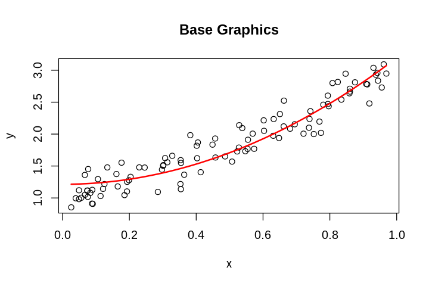
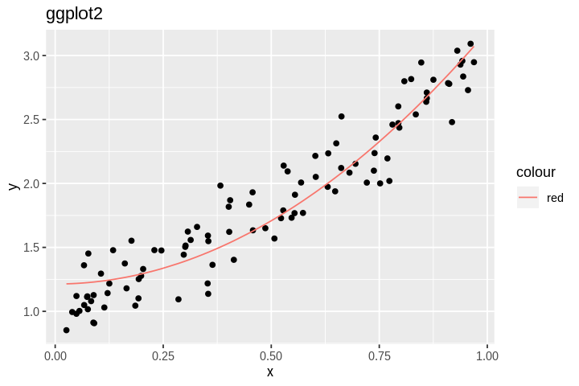
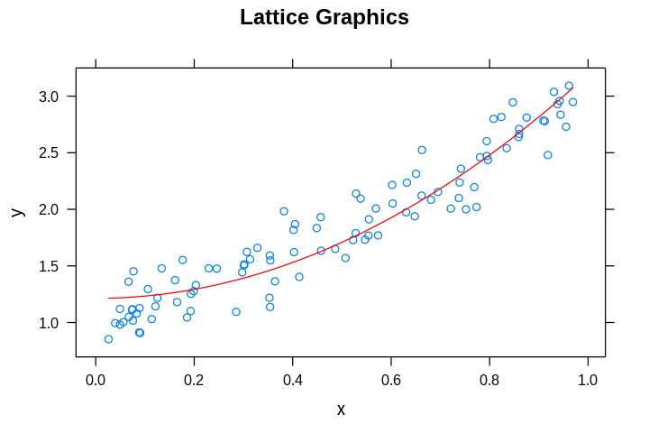

R Graphics¶
R Graphics Systems¶
There are 3 different grpahcis systems widely used in R - base, lattice and ggplot2. We will focus on ggplot2 because it provides the most logical approach to plot constructin using a grammar of graphics.
Base¶
[1]:
n <- 100
x <- sort(runif(n))
y <- x^2 + x + 1 + 0.2*rnorm(n)
[2]:
m <- lm(y ~ I(x^2))
[3]:
options.orig <- options(repr.plot.width=6, repr.plot.height=4)
[4]:
plot(x, y, main="Base Graphics")
lines(x, predict(m), col = "red", lwd = 2)

ggplot2¶
[5]:
library(tidyverse)
Registered S3 methods overwritten by 'ggplot2':
method from
[.quosures rlang
c.quosures rlang
print.quosures rlang
── Attaching packages ─────────────────────────────────────── tidyverse 1.2.1 ──
✔ ggplot2 3.1.1 ✔ purrr 0.3.2
✔ tibble 2.1.2 ✔ dplyr 0.8.1
✔ tidyr 0.8.3 ✔ stringr 1.4.0
✔ readr 1.3.1 ✔ forcats 0.4.0
── Conflicts ────────────────────────────────────────── tidyverse_conflicts() ──
✖ dplyr::filter() masks stats::filter()
✖ dplyr::lag() masks stats::lag()
ggplto2 only works on data.frame or similar objects¶
[6]:
df <- tibble(x=x, y=y)
[7]:
head(df)
| x | y |
|---|---|
| <dbl> | <dbl> |
| 0.02597720 | 0.8526721 |
| 0.03939677 | 0.9947642 |
| 0.04915126 | 0.9809143 |
| 0.04920200 | 1.1198401 |
| 0.05609914 | 1.0031721 |
| 0.06669788 | 1.3603442 |
[8]:
ggplot(df, aes(x=x, y=y)) +
geom_point() +
geom_line(aes(x=x, y=predict(m), color="red")) +
labs(title="ggplot2")

lattice¶
For more examples, see Getting Started with Lattice Graphics
[9]:
library(lattice)
[10]:
xyplot(y ~ x,
main = "Lattice Graphics",
panel = function(x, y, ...) {
panel.xyplot(x, y, ...)
panel.lines(x, predict(m), col.line = "red")
}
)
